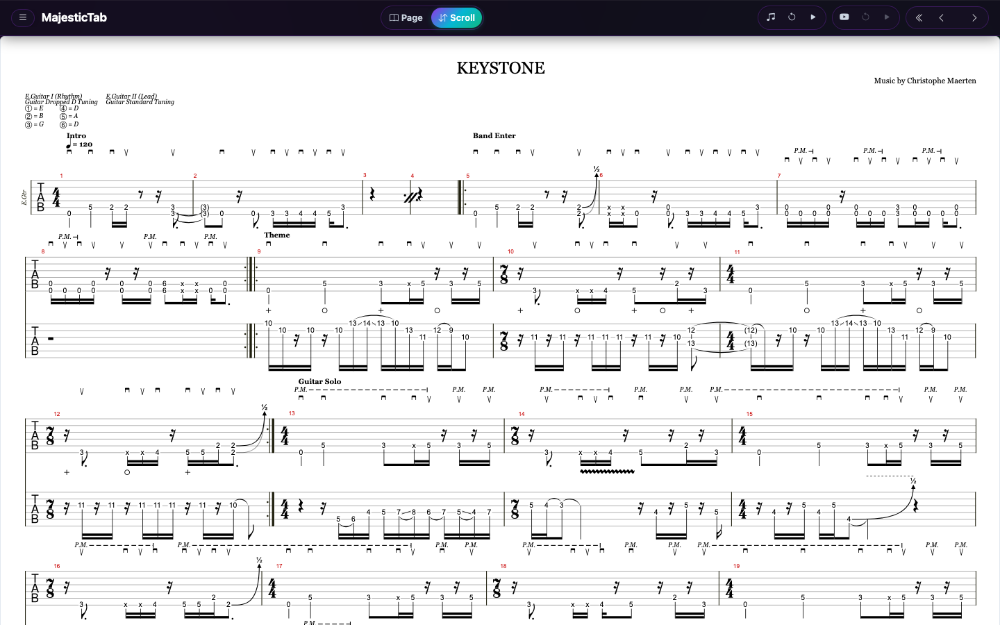
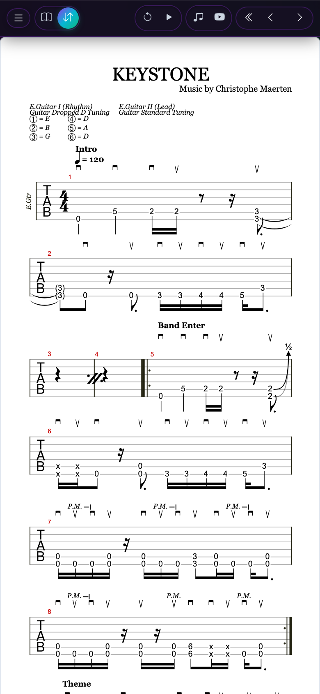
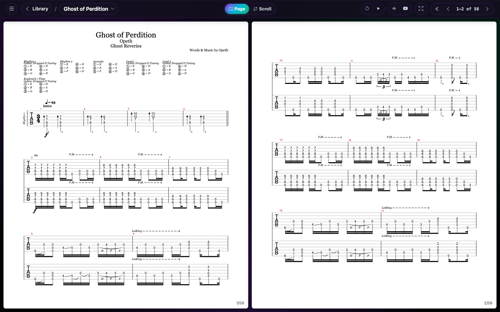
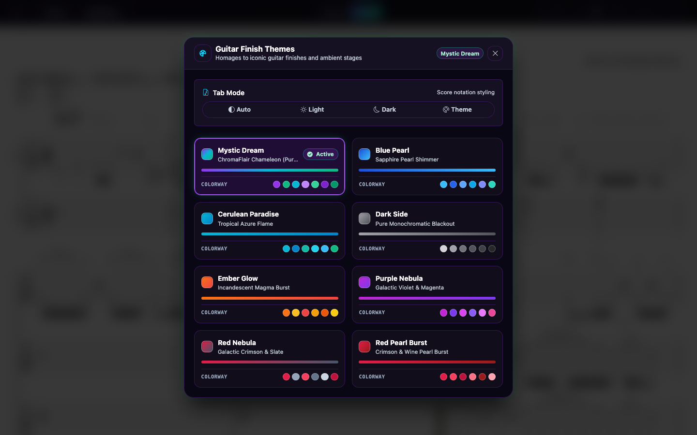
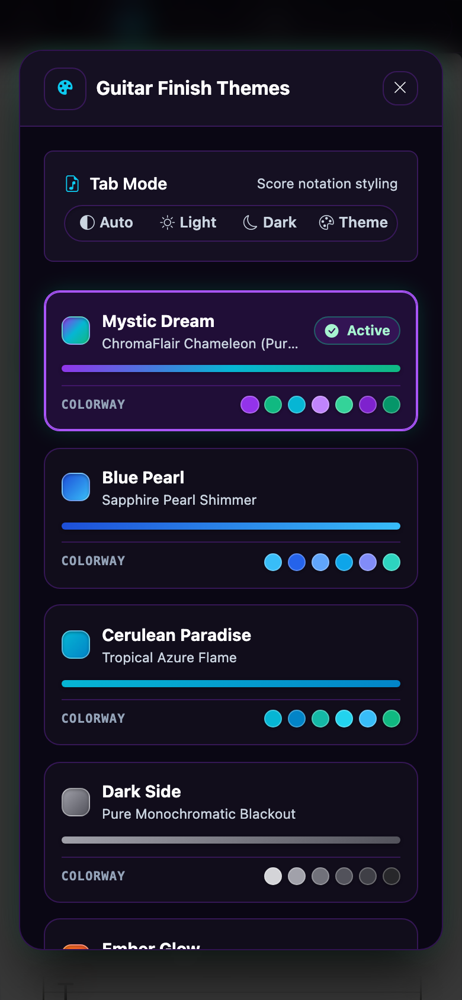

Just open your tab
and start playing.
MajesticTab is a distraction-free viewer for guitar tabs. See every guitar track in one clean multi-track view, with no other instruments in the way. Drop in a PDF, Guitar Pro, or plain-text tab file and practice in seconds, with none of the fiddling that tab-composition software demands. Play along with soundfonts or YouTube backing tracks. Get a native app for your platform, or run it right in your browser.
Every guitar track. Nothing else.
See all your guitar parts together in one multi-track view, without drums, bass, keys or vocals cluttering the page. No more switching between tracks while you play through a song. It reads like a professional tab book.


Built for practice
Less fiddling. More playing.
Composition suites are made for writing music. MajesticTab is made for reading it while your hands are busy.
Open and go
Pick a PDF, Guitar Pro (GP, GPX, GP5, GP4, GP3) or text file. No project setup, no tracks to configure, no accounts to create.
Fills your screen
Margins are trimmed and tab is sized to your display, so you see more music per screen and turn fewer pages.
Easy on the eyes
Light, dark, or guitar-finish themes for the sheet. Dark mode inverts black-on-white PDFs for the stage or late-night sessions.
Two ways to read
Continuous scroll or book-like pages
Switch with one tap, any time, on any file.
Endless vertical flow with a progress indicator. Ideal for learning a song section by section, or when you'd rather not break the flow.

Like a real book. One page on a phone, two side by side on a wide screen. Choose to advance one page or two at a time.
Works with Bluetooth page turners
Keep both hands on the guitar. Most Bluetooth foot pedals and page turners (AirTurn, PageFlip and similar) act as a keyboard, and MajesticTab already speaks keyboard.
- Arrow keys, Page Up and Page Down
- Works in both page and scroll modes
- Also tap, click, mouse and on-screen buttons
Pair your pedal, open a tab, and press. Compatibility varies by device, so check your pedal's keyboard mode.
Take it with you
PDF export & experimental condensing
Export to PDF
Save what you see as a clean, printable A4 PDF. Print it, share it, or load it on any other device.
Condense PDF EXPERIMENTAL
For multi-track tab PDFs, MajesticTab detects staves with notes, drops empty ones, and redraws the groupings. Tabs with many rhythm and lead tracks can shrink to a fraction of the pages. It's still in beta, so always keep your original.
Guitar Inspired Themes
Make the app yours with color schemes inspired by legendary electric guitar finishes and bursts, with Mystic Dream as the signature default. Your sheet can follow the theme too, or stay light or dark.
Mystic Dream
Iridescent shift
Purple Nebula
Deep cosmic burst
Red Nebula
Vibrant ruby flame
Cerulean Paradise
Tropical aqua burst
Blue Pearl
Shimmering metallic
Dark Side
Monochrome stealth
Ember Glow
Warm flame maple
Red Pearl Burst
Deep crimson edge


Pick a finish and the whole interface adapts instantly.
Yours, completely
Free, open source, and private
Free
No subscription, ads, or paywalled features.
Open source
MIT licensed. Read it, fork it, improve it.
Works offline
Native apps need no internet connection, so your tabs are ready on stage or in the rehearsal room.
No remote data stored
Files are processed on your device and never uploaded. Read the privacy policy.
One app. Every device.
Native builds are tuned for each operating system and work fully offline. The web version runs the same app in any modern browser.
iPhone & iPad
Add to your home screen for a full-screen, app-like experience that launches without browser chrome.
- Open the app in Safari
- Tap Share
- Choose Add to Home Screen
All downloads are published on GitHub Releases. MIT licensed.